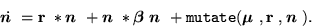

With mutation, equation (1) reads
 |
(9) |
The difficulty with adding mutation to this model is how to define the
mapping between genotype space and phenotype space, or in other words,
what defines the embryology. A few studies, including Ray's
Tierra world, do this with an explicit mapping from the genotype to to
some particular organism property (e.g. interpreted as machine language
instructions, or as weight in a neural net). These organisms then
interact with one another to determine the population dynamics. In
this model, however, we are doing away with the organismal layer, and
so an explicit embryology is impossible. The only possibility left is
to use a statistical model of embryology. The mapping between
genotype space and the population parameters